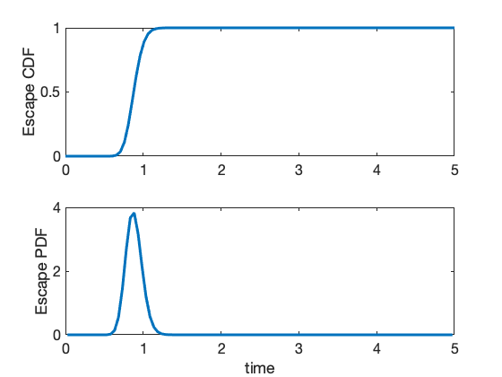
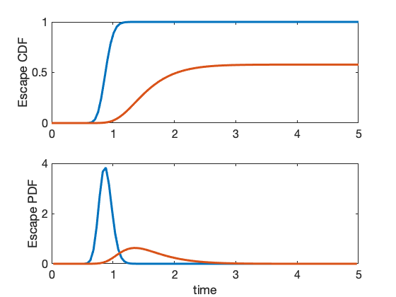

Contents
- example_EscapeTimes
- Example 1 - a simple transcription/translation model
- Next, specify a boundary for the escape calculation
- Example 2 - escape time with time varying transcription rate
- Here we solve for the escape time:
- Example 3 - More complex escape thresholds.
- Example 4 - Time until making a specific decision.
example_EscapeTimes
In this script, we demonstrate how to create and solve a fiorst passage time problem.
close all clear all addpath('../CommandLine');
Example 1 - a simple transcription/translation model
First create a full model (e.g., for mRNA and protein)
Model1 = SSIT;
Model1.species = {'rna','protein'};
Model1.initialCondition = [0;0];
Model1.propensityFunctions = {'kr';'gr*rna';'k2*rna';'g2*protein'};
Model1.stoichiometry = [1,-1,0,0;0,0,1,-1];
Model1.parameters = ({'kr',100;'gr',0.5;...
'k2',2;'g2',1});
Next, specify a boundary for the escape calculation
Here we will calculate the time until the protein concentration reaches 50.
Model1.tSpan = linspace(0,5,100);
Model1.fspOptions.escapeSinks.f = {'x2'};
Model1.fspOptions.verbose = false;
Model1.fspOptions.escapeSinks.b = 50;
[fspSoln1,Model1.fspOptions.bounds] = Model1.solve;
Model1.makePlot(fspSoln1,'escapeTimes',[],[],10)
Model1 = Model1.formPropensitiesGeneral('Model1');
 Example 2 - escape time with time varying transcription rate
First let's copy and adjust the previous mdoel to add a time varying rate:
Model2 = Model1;
Model2.propensityFunctions = {'kr*I';'gr*rna';'k2*rna';'g2*protein'};
Model2.inputExpressions = {'I','exp(-2*t)'};
Model2 = Model2.formPropensitiesGeneral('Model2');
Here we solve for the escape time:
Model2.fspOptions.escapeSinks.f = {'x2'};
Model2.fspOptions.escapeSinks.b = 50;
[fspSoln2,Model2.fspOptions.bounds] = Model2.solve;
Model2.makePlot(fspSoln2,'escapeTimes',[],[],10)
% Note that with the decaying transcription rate not all cells will
% reach the level of 50 proteins.
 Example 3 - More complex escape thresholds.
In this example we explore the escape time until the number of proteins is more than 1.25 times the current number of mRNA molecules.
Model3 = Model1;
Model3.fspOptions.escapeSinks.f = {'x2/x1'};
Model3.fspOptions.escapeSinks.b = 1.25;
[fspSoln3,Model3.fspOptions.bounds] = Model3.solve;
Model3.makePlot(fspSoln3,'escapeTimes',[],[],10)
Example 4 - Time until making a specific decision.
In this example, we assume that there are two potential avenues to escape, and we want to know when and with what probability will each decision be made. In our case we want to know when: A) the number of RNA exceeds 33 B) the number of proteins exceeds 15 C) the number of proteins and RNA combined exceeds 45
Model3 = Model1;
Model3.fspOptions.escapeSinks.f = {'x1';'x2';'x1+x2'};
Model3.fspOptions.escapeSinks.b = [33;15;45];
[fspSoln3,Model3.fspOptions.bounds] = Model3.solve;
Model3.makePlot(fspSoln3,'escapeTimes',[],[],12)
legend(Model3.fspOptions.escapeSinks.f)